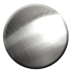
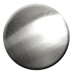
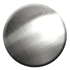
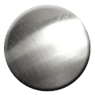

一种浅灰色的过渡金属
常温下,电阻率:20 ×10-3Ω*m
熔点：419.5℃
是第四"常见"的金属，仅次于铁、铝及铜，外观呈现银白色，在现代工业中对于电池制造上有不可磨灭的地位，为一相当重要的金属。另外，锌是人体必需的微量元素之一,在人体生长发育、生殖遗传、免疫、内分泌等重要生理过程中起着极其重要的作用。'); $('#Lightanimation').html('
钢灰色或银白色的金属
常温下,电阻率:0.0532Ω*m
熔点：3410℃
主要用途为制造灯丝和高速切削合金钢、超硬模具,也用于光学仪器，化学仪器。中国是世界上最大的钨储藏国。经过冶炼后的钨是银白色有光泽的金属，熔点极高，硬度很大，蒸气压很低，蒸发速度也较小，化学性质也比较稳定。');
白热发光的代表
选择灯丝材料
从铁、锌、钨中选择合适的材料，注意电阻率不能太小，不然一通电就短路啦；熔点也不能太低，不然一烧就断啦